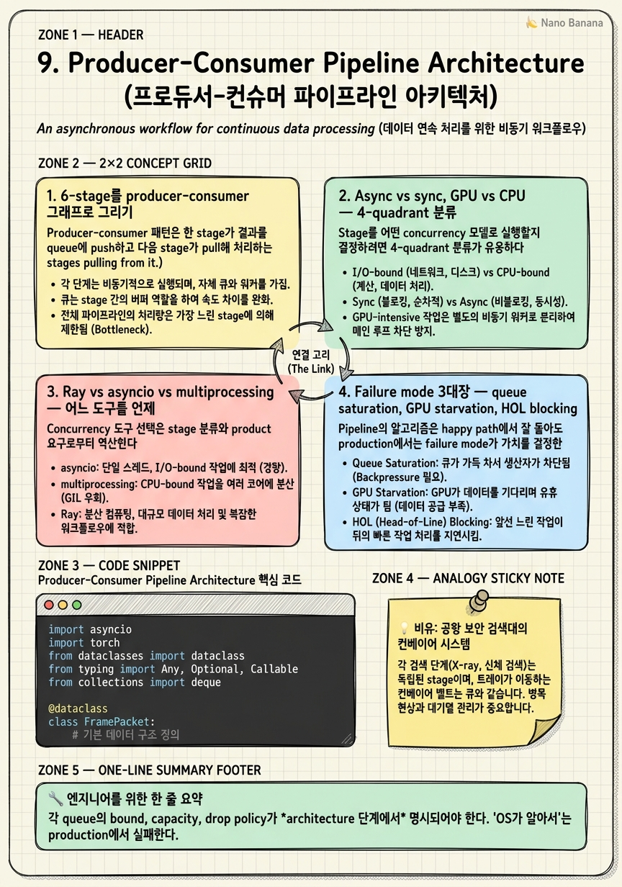

Producer-Consumer Pipeline Architecture

🎯 학습 목표
- Real-time video LLM의 6-stage를 producer-consumer 그래프로 그려 stage 사이의 queue / backpressure를 명시할 수 있다
- async stage, sync stage, GPU stage, CPU stage를 4-quadrant로 분류하고 각 quadrant에 적합한 concurrency 모델을 선택할 수 있다
- Ray actor, asyncio task, multiprocessing process 3개 선택지의 trade(memory share, IPC cost, GIL)을 비교할 수 있다
- Queue saturation, GPU starvation, head-of-line blocking 3대 failure mode를 detection signal과 함께 설명할 수 있다
- 6-stage invariant contract를 정의해 stage 구현을 plug-and-play로 만들 수 있다
Chapter 6-8까지가 각 stage 내부의 최적화였다면 이 챕터는 stage 사이를 잇는 system을 다룬다. Real-time pipeline의 가장 어려운 결정은 stage 알고리즘이 아니라 stage들을 어떻게 묶고 어떻게 통신시키느냐다. 6개 stage가 각각 자기 budget을 지킨다고 해서 전체가 work하지 않는다. Stage 사이 queue가 잘못 운영되면 한 stage의 spike가 전체 pipeline을 파괴한다.
핵심 멘탈 모델 시프트: General video LLM은 'sampler.select()'가 unit이었다. Hour-scale은 'memory.write() / memory.retrieve()'가 unit이었다. Real-time은 'stage.process(frame) → queue.put(token)'의 producer-consumer 그래프 전체가 unit이다. 한 stage만 들어내서 swap할 수 있게 invariant contract를 정의하는 게 plug-and-play 아키텍처의 핵심이다.
이 챕터는 Ray actor, asyncio, multiprocessing의 3-way 비교를 하고, queue 운영의 backpressure / drop policy를 production 결정 관점에서 다룬다. Failure mode를 detection signal과 함께 정리해 incident playbook에 가까운 형태로 마무리한다.
핵심 내용
1. 6-stage를 producer-consumer 그래프로 그리기
Producer-consumer 패턴은 한 stage가 결과를 queue에 push하고 다음 stage가 pull해 처리하는 구조다. Real-time video LLM의 6-stage를 그래프로 표현하면:
[Capture] →q1→ [Decode] →q2→ [Sample] →q3→ [Encode] →q4→ [Reduce] →q5→ [LLM] →q6→ [Response]
Queue가 5개. 각 queue가 운영 결정을 요구한다. (a) Bounded or unbounded? Unbounded면 producer가 빠르고 consumer가 느릴 때 메모리 폭발. Real-time에서는 거의 항상 bounded. (b) Capacity? 1이면 strict pipeline(producer가 consumer 한 칸만 앞서 감), N이면 burst absorber. Real-time video는 보통 2-8 capacity. (c) Full일 때 정책? Block, drop oldest, drop newest, sample down. 이게 backpressure / drop policy의 핵심.
Graph 구조를 보면 결정 포인트가 보인다. Capture와 Decode는 frame-independent해서 parallel. Sample은 sequential dependency가 있어 single-worker. Encode는 batchable해서 multi-frame batch worker. LLM은 KV cache state를 들고 있어 session-affinity. Stage마다 worker 모델이 다르다.
핵심 결정: '어디서 frame을 drop할 것인가'를 architecture 단에서 정해야 한다. 모든 queue에서 drop 가능하게 두면 frame이 어디서 사라졌는지 debug 불가. 시니어 결정은 'capture 직후 (q1) 또는 reduce 직후 (q5)' 둘 중 하나로 drop point를 고정하는 것이다. q1 drop은 'too fast input' 처리, q5 drop은 'too slow LLM' 처리에 대응한다.
2. Async vs sync, GPU vs CPU — 4-quadrant 분류
Stage를 어떤 concurrency 모델로 실행할지 결정하려면 4-quadrant 분류가 유용하다.
| Sync (blocking) | Async (non-blocking) | |
|---|---|---|
| CPU stage | thread pool / multiprocessing | asyncio |
| GPU stage | dedicated worker thread + CUDA stream | CUDA graph + async kernel launch |
Capture (CPU sync): 네트워크 socket read나 camera handle은 blocking system call이 많다. Asyncio도 가능하지만 lib 지원 따라 다름. 가장 단순한 건 dedicated thread.
Decode (GPU+CPU hybrid): NVDEC는 GPU async이고 PyCairo/OpenCV는 CPU sync. 둘 다 비-Python time 영역에 머무르므로 GIL 영향 적음. Decode worker를 dedicated thread로 두는 게 표준.
Sample (CPU async): 결정 로직만이라 매우 가볍다 (<1ms). asyncio coroutine으로 충분.
Encode (GPU sync): PyTorch encoder forward. GIL holding이 길어서 asyncio와 충돌. Dedicated worker + CUDA stream으로 isolate. Batching을 위해 micro-batcher 패턴 (Dynamic batch size를 100ms window 내에서 결정).
Reduce (GPU sync): TokenMerge / clustering. Encode와 같은 worker에 넣거나 별 worker에 별 GPU에 split. Multi-GPU면 NVLink로 token 옮기는 cost vs 분리 이득 비교.
LLM (GPU sync, session-affine): vLLM/SGLang process로 분리. KV cache state 때문에 session이 같은 process에 stick. Async API는 vLLM이 제공하지만 backend는 sync.
시니어 직관: GPU 작업끼리도 같은 GPU에서 같은 stream이면 직렬, 다른 stream이면 parallel. 다른 GPU면 IPC cost(NVLink). 한 frame이 encoder GPU에서 LLM GPU로 옮겨가는 데 ~1-2ms (256 token × 4096 dim × fp16 = 2MB / 50GB/s NVLink). 이 IPC cost를 무시하면 multi-GPU 분리가 net loss.
3. Ray vs asyncio vs multiprocessing — 어느 도구를 언제
Concurrency 도구 선택은 stage 분류와 product 요구로부터 역산한다. 3가지 주류 선택지.
asyncio. Python coroutine. CPU async에 강함. Multi-GPU나 multi-process로 못 확장. Single-machine + I/O bound stage(capture, response API 송수신) 묶기에 좋음. GIL을 그대로 떠안음 — GPU stage는 별 thread로 release해야 함. 단순 prototype에 가장 빠르다.
multiprocessing. Process 단위 isolation. Stage마다 별 process로 두면 GIL 우회. IPC는 pickle + queue로 비용 큼 (256 token × fp16 = 0.5KB per frame이면 OK, 그러나 raw frame은 MB 단위라 IPC 부담). GPU stage 사이에는 CUDA IPC handle 사용 가능. Stage별 reliability isolation에 강함 (한 process 죽어도 다른 stage 살아남음). Production에서 stage 격리 정책으로 자주 채택.
Ray. Actor 모델 + distributed. Stage 하나하나를 actor로 두면 cluster-scale로 확장 가능. Object store(Plasma)로 zero-copy shared memory. Multi-node로 LLM serving과 encoder serving을 분리 가능. 단점: framework overhead (cold start, actor scheduler). Single-node에서는 multiprocessing이 더 가볍다.
선택 가이드:
- Single-GPU prototype → asyncio + dedicated threads
- Single-node production → multiprocessing or Ray local
- Multi-node production → Ray + KubeRay or hand-rolled gRPC
실전에서 자주 보이는 패턴: 'asyncio main loop + thread pool for GPU stages + Ray for LLM serving cluster'. Hybrid다. 'Ray만 쓴다' 또는 'asyncio만 쓴다'는 보통 잘못된 단순화. 각 도구가 잘하는 영역이 다르므로 stage 분류 결과에서 선택.
주의: Triton Inference Server, NVIDIA Riva 같은 비-Python serving 도구를 LLM/encoder stage에 두면 GIL을 완전히 우회. Stage 사이 통신은 gRPC. Production 시스템 (Gemini Live 추정)에서 자주 보이는 architecture.
4. Failure mode 3대장 — queue saturation, GPU starvation, HOL blocking
Pipeline의 알고리즘은 happy path에서 잘 돌아도 production에서는 failure mode가 가치를 결정한다. 3대장.
(1) Queue saturation. Producer가 consumer보다 빠를 때 queue가 가득 찬다. Bounded queue면 backpressure 발생. 신호: queue.size() 메트릭이 capacity에 수렴. Upstream stage 처리 시간이 점점 늘어남 (block 때문). 해결: (a) drop policy 활성화, (b) consumer worker 추가, (c) producer rate 제한. 좋은 production은 saturation이 발생하기 전에 drop policy가 trigger되도록 명시 설계 — 'drop이 graceful degradation'.
(2) GPU starvation. GPU worker가 input을 기다리며 idle. 신호: GPU utilization이 30% 이하로 떨어짐. Upstream queue size = 0. CPU stage가 bottleneck. 해결: (a) CPU stage prefetch buffer 늘리기, (b) CPU stage parallel worker 추가, (c) input pipeline에 prefetch_factor 추가. PyTorch DataLoader의 num_workers 패턴을 streaming pipeline에 가져온다.
(3) Head-of-line blocking. 한 frame의 처리가 길어져 뒤 frame이 다 막힘. 신호: latency p99이 평균보다 10배 이상 튐. 해결: (a) per-frame timeout, (b) priority queue로 짧은 작업 우선, (c) stage timeout 후 skip. 단순한 방법은 'stage timeout 시 frame drop' — incident에서 reproducibility를 위해 timeout이 deterministic해야 함.
시니어 평가 포인트: 후보가 'pipeline이 잘 도는가'를 묻기 전에 'failure mode가 무엇이고 detection signal이 무엇인가'를 묻는다. 그리고 detection이 가능한 메트릭(queue depth, GPU util, per-stage latency)을 architecture 단에서 1급 객체로 둔다. Pipeline은 failure mode 정의 위에 서 있다가 시니어 멘탈 모델.
5. Plug-and-play 6-stage — invariant contract
Plug-and-play 아키텍처의 핵심은 stage 구현을 swap 가능하게 만드는 invariant contract다. 'Encoder를 SigLIP에서 InternVideo2로 바꾼다', 'Sampler를 AKS에서 BOLT로 바꾼다' 같은 변경이 pipeline 코드를 안 건드리고 가능해야 한다. 그러려면 각 stage의 interface가 정의되어야 한다.
6-stage invariant contract sketch:
class Stage(Protocol):
name: str
def process(self, frame_id: int, payload: Any) -> Any: ...
def health(self) -> dict: ... # latency, queue depth, errors
def drop_signal(self) -> bool: ... # tell upstream to drop
각 stage가 (a) frame_id를 invariant로 통과시키고, (b) 자기 health를 노출하고, (c) 'drop이 필요한지' signal을 위로 보낸다. 이 3가지가 plug-and-play의 minimal contract다.
왜 frame_id 통과가 invariant인가: 6-stage 끝에서 'response가 어느 frame에 대응하나'를 추적할 수 있어야 한다. Debugging에서도 'p99 spike가 발생한 frame이 어느 stage에서 늘어졌나'를 join하려면 frame_id가 같이 흘러야 한다. 새 stage를 추가할 때 frame_id를 떨어뜨리면 trace가 깨진다.
왜 drop_signal이 invariant인가: Downstream이 saturate되면 upstream이 알아야 자기 decisions(sampling rate)을 조정. 'Capture가 30 FPS인데 LLM이 saturate되면 capture가 15 FPS로 떨어진다' 같은 adaptive behavior가 가능해진다. Contract 없이 push만 하면 가운데 queue에서 drop이 일어나고 reproducibility가 사라진다.
Stage swap 예:
- Encoder swap: SigLIP → InternVideo2 (Wang et al., arXiv:2403.15377). 같은 contract 따르면 1줄 변경.
- Sampler swap: AKS → BOLT → Q-Frame. 모두
process(frame_id, frame) -> selected_frame_idcontract. - LLM swap: vLLM → SGLang → TensorRT-LLM. KV cache 운영 차이는 stage 내부로 캡슐화.
이 plug-and-play 사고는 Chapter 10의 A/B testing과 직접 연결된다. 두 stage 구현을 같은 contract 위에서 traffic split해야 신뢰할 만한 비교가 가능. Contract가 없는 시스템에서는 A/B 비교 자체가 의미를 잃는다.
💡 비유로 이해하기
국제공항 보안 검색대에서 일어나는 일을 떠올려보자. (1) 승객이 짐을 트레이에 담는다(capture). (2) 컨베이어가 X-ray 기계 안으로 짐을 보낸다(decode). (3) X-ray 영상에서 의심 짐을 분류하는 결정(sample). (4) 일반 짐은 통과시키고 의심 짐은 second screening으로 보낸다(encode). (5) Second screening 결과를 통합한다(reduce). (6) 보안 요원이 최종 결정한다(LLM). (7) 승객에게 짐 반환(response).
공항은 모든 producer-consumer 시스템의 교과서다. 각 단계 사이에 trays이 queue로 쌓인다. 각 queue가 가득 차면 backpressure가 위로 전파된다. X-ray가 느리면 트레이 적재대가 가득 차고 승객은 새 짐을 못 올린다. 이때 공항이 하는 일: 두 번째 X-ray를 켠다(consumer 추가), 또는 'liquids check를 빠르게 skip'한다(drop policy)/'low-risk lane'으로 분리(priority queue).
Failure mode 3대장도 그대로 매핑된다. (a) Queue saturation: 검색대 입구에 줄이 100명. (b) GPU starvation: X-ray 한 대가 5분 동안 짐을 못 받음 (앞에 사람이 짐을 안 올림). (c) Head-of-line blocking: 한 승객이 의심 짐 때문에 5분 걸려서 뒤 50명이 다 막힘.
그리고 plug-and-play는 공항이 X-ray 기계를 새 모델로 바꿀 때 컨베이어 시스템 전체를 안 건드리는 것이다. 새 X-ray가 같은 트레이 사이즈, 같은 출력 포트, 같은 throughput 명세를 만족하면 swap이 가능. Invariant contract 그대로다. Streaming video LLM의 producer-consumer 아키텍처는 공항 보안 검색대를 GPU pipeline에 옮긴 것이다 — 모든 운영 결정이 비유의 직관 그대로 성립한다.
💻 코드 예시
Multi-worker streaming pipeline의 sketch. CPU stage는 asyncio, GPU stage는 dedicated thread with CUDA stream. Stage 사이 bounded queue + drop policy. Health metric을 1급 객체로 노출.
import asyncio
import torch
from dataclasses import dataclass
from typing import Any, Optional, Callable
from collections import deque
@dataclass
class FramePacket:
frame_id: int
payload: Any
enqueue_ts: float
class BoundedQueue:
def __init__(self, cap: int, name: str, drop_policy: str = "oldest"):
self.cap = cap; self.name = name; self.drop_policy = drop_policy
self.q: deque = deque()
self.event = asyncio.Event()
self.dropped = 0
async def put(self, pkt: FramePacket) -> bool:
if len(self.q) >= self.cap:
if self.drop_policy == "oldest":
self.q.popleft(); self.dropped += 1
elif self.drop_policy == "newest":
self.dropped += 1; return False
else: # block
while len(self.q) >= self.cap:
await asyncio.sleep(0.001)
self.q.append(pkt); self.event.set()
return True
async def get(self) -> FramePacket:
while not self.q:
self.event.clear()
await self.event.wait()
return self.q.popleft()
def health(self) -> dict:
return {"name": self.name, "depth": len(self.q),
"cap": self.cap, "dropped": self.dropped,
"saturated": len(self.q) >= self.cap * 0.9}
class GPUStage:
def __init__(self, name: str, fn: Callable, stream: torch.cuda.Stream):
self.name = name; self.fn = fn; self.stream = stream
self.latency_ms = deque(maxlen=1000)
async def run(self, in_q: BoundedQueue, out_q: BoundedQueue):
loop = asyncio.get_event_loop()
while True:
pkt = await in_q.get()
t0 = torch.cuda.Event(enable_timing=True)
t1 = torch.cuda.Event(enable_timing=True)
# Offload GPU work to a thread holding its CUDA stream.
def _work():
with torch.cuda.stream(self.stream):
t0.record()
out = self.fn(pkt.payload)
t1.record()
t1.synchronize()
return out, t0.elapsed_time(t1)
out, dt = await loop.run_in_executor(None, _work)
self.latency_ms.append(dt)
await out_q.put(FramePacket(pkt.frame_id, out, pkt.enqueue_ts))
async def pipeline(stages: list[GPUStage], queues: list[BoundedQueue],
source: Callable):
# Source pushes into queues[0]; stage i reads queues[i] and writes queues[i+1].
workers = [asyncio.create_task(s.run(queues[i], queues[i+1]))
for i, s in enumerate(stages)]
async for pkt in source():
ok = await queues[0].put(pkt)
if not ok:
# Backpressure signal: source can lower FPS or skip.
await asyncio.sleep(0.005)
await asyncio.gather(*workers)네 가지 production-grade 결정이 코드에 보인다. (1) BoundedQueue에 drop_policy를 명시 — 'oldest', 'newest', 'block' 중 architecture 단계에서 선택. Queue가 saturated 됐을 때 어떻게 동작할지를 코드 단에서 단언하는 게 시니어 디자인. (2) GPUStage.run이 loop.run_in_executor로 GPU 작업을 thread pool에 offload — asyncio main loop을 GPU op이 block하지 않게. CUDA stream을 명시적으로 잡아서 stage 간 stream 분리 가능 (parallel execution). (3) health()가 모든 queue/stage에서 1급 객체로 노출 — Prometheus exporter나 dashboard에 그대로 join. Saturated signal이 metric으로 노출되므로 alert을 architecture로 정당화 가능. (4) pipeline 함수의 source가 put() 결과로 ok=False를 받으면 sleep — backpressure가 source로 전파되는 path. Capture rate를 자동으로 줄이는 adaptive FPS의 토대. 30 FPS → 15 FPS automatic downshift가 이 한 줄로 구현된다.
🏭 현업에서의 평가
✅ 시니어가 보는 것
- 6-stage를 producer-consumer graph로 그리고 각 queue의 운영 정책(bound, drop) 명시
- async/sync × CPU/GPU 4-quadrant 분류와 각 quadrant의 concurrency 모델 매칭
- Ray/asyncio/multiprocessing을 'single-node prototype vs multi-node production'으로 자연스럽게 분리
- Failure mode 3대장(saturation, starvation, HOL)을 detection metric과 함께 정의
- Plug-and-play를 위해 frame_id, health, drop_signal 같은 invariant contract를 stage 단에서 강제
⚠️ 레드 플래그
- 6-stage를 모두 하나의 asyncio coroutine으로 묶음 (GPU stage가 main loop을 block)
- Queue를 unbounded로 두고 'OS가 알아서 다룬다'고 답함
- Drop policy를 모든 queue에서 가능하게 두고 *drop point를 fix하지 않음*
- Ray를 'distributed니까 production에 좋다'고 단순 추천 — single-node overhead 무시
- Stage swap을 위한 contract를 정의 안 하고 'code refactoring으로 매번 바꾸면 된다'고 답함
🎤 예상 인터뷰 질문
- **Q1. Drop point 고정.** 30 FPS streaming pipeline에서 LLM이 가끔 spike를 일으켜 q5가 saturate된다. Drop을 q1(capture 직후) 또는 q5(reduce 직후) 어디서 일어나게 architecture를 잡을지, 두 선택의 trade를 explain하라.
- **Q2. Concurrency 도구 선택.** Single-GPU prototype을 production multi-node 시스템으로 확장한다. 어떤 stage를 Ray actor로, 어떤 stage를 asyncio task로, 어떤 stage를 별 process로 둘 것인가? 각 결정의 근거를 4-quadrant 분류로 정당화하라.
- **Q3. Failure mode detection.** GPU utilization이 30%로 떨어지고 latency p99이 평소의 5배가 됐다는 alert이 왔다. 3대장 중 어떤 failure mode일 가능성이 높은가? 어떤 추가 metric을 보고 진단을 확정할 것인가? 해결 액션은?
✨ 핵심 요약
6-stage를 producer-consumer graph로 그려야 운영 결정이 보인다
각 queue의 bound, capacity, drop policy가 *architecture 단계에서* 명시되어야 한다. 'OS가 알아서'는 production에서 실패한다.
Drop point는 architecture로 고정해야 한다
모든 queue에서 drop 가능하면 어디서 frame이 사라졌는지 debug 불가. q1(input too fast) 또는 q5(LLM too slow) 한 곳으로 고정.
Async/sync × CPU/GPU 4-quadrant로 stage를 분류한다
각 quadrant에 적합한 concurrency 모델이 다르다. GPU stage는 dedicated worker + CUDA stream, CPU async stage는 asyncio coroutine.
Ray / asyncio / multiprocessing은 stage 분류에서 역산
asyncio = single-node prototype, multiprocessing = stage 격리 + GIL 우회, Ray = multi-node distributed. Production은 거의 항상 hybrid.
Failure mode 3대장: queue saturation, GPU starvation, HOL blocking
각각 detection signal이 다르다 (queue depth, GPU util, latency tail). Pipeline은 happy path가 아니라 failure mode 정의 위에 서 있다.
Plug-and-play는 invariant contract로 가능해진다
frame_id 통과, health 노출, drop_signal 전파 3가지가 minimal contract. Encoder/sampler/LLM swap이 코드 변경 없이 가능.
Backpressure를 source로 전파해야 adaptive FPS가 된다
Downstream saturated 시 capture rate를 자동 하향. 30 → 15 FPS automatic downshift가 graceful degradation의 기반.
Stage 격리가 reliability를 만든다
Multiprocessing/Ray로 stage를 격리하면 한 stage crash가 전체 pipeline을 죽이지 않음. 'Encoder process가 죽으면 capture/decode는 살아 있고 새 encoder process가 spawn된다'가 production 표준.